일반기계기사 (2004-05-23 기출문제)
1과목: 재료역학
1. 40 kN의 인장하중을 받는 지름 40 mm의 알루미늄 봉의 단위 체적당의 탄성에너지는 몇 N∙m/m3인가? (단, 알루미늄의 탄성계수는 72 GPa이다.)
- 17020
- 6515
- 1702
- 7036
(정답률: 30%)

2. 중공축의 내부 직경이 40 mm, 외부 직경이 60 mm일 때, 최대 전단응력이 120 MPa를 초과하지 않도록 적용할 수있는 최대 비틀림 모멘트는 몇 kN∙m 인가?
- 1.02
- 2.04
- 3.06
- 4.08
(정답률: 38%)
3. 보에 있어서 축선의 곡률반경(曲率半徑) ρ, 굽힘모멘트M, 단면의 단면 2차 모멘트 Ⅰ, 탄성계수를 E라 하면 다음식 중 맞는 것은?
- ρ=EⅠM
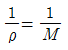
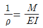
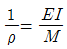
(정답률: 35%)
4. 길이 5 m의 봉이 상단에서 고정되어 세로로 매달려 있다. 봉이 10 ㎝x10 ㎝의 균일단면을 가지며 단위 길이당 중량이 800 N/m 일때 봉의 하단, 즉 자유단에서 늘어난 길이 는 몇 mm 인가? (단, 탄성계수 E = 200 GPa 이다.)
- 0
- 5x10-3
- 10x10-3
- 20x10-3
(정답률: 12%)
5. 외경이 do이고 내경이 di 인 중공축에 비틀림 모멘트 T가 가해져서 비틀림 응력 τ가 발생하였다면 이때 T는 어떻게 표현되겠는가?
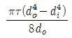
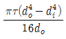
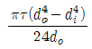
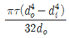
(정답률: 42%)
6. 그림과 같은 직사각형 단면의 짧은 기둥에서 점 P에 압축력 100 kN을 받고 있다. 단면에 발생하는 최대 압축응력은 몇 MPa 인가?
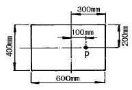
- 0.83
- 8.3
- 83
- 0.083
(정답률: 21%)
7. 그림과 같은 돌출보에 집중하중 P가 작용할 때 굽힘모멘트 선도(B.M.D)로 옳은 것은?
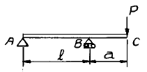
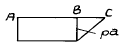
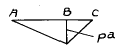
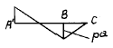
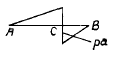
(정답률: 18%)
8. 지름 10 ㎜의 균일한 원형 단면 막대기에 길이 방향으로 7850 N의 인장하중이 걸리고 있다. 하중이 전단면에 고루 걸린다고 보면 하중방향에 수직인 단면에 생기는 응력은?
- 785 MPa
- 78.5 MPa
- 100 MPa
- 1000 MPa
(정답률: 58%)
9. 지름이 22 ㎜인 막대에 25 kN 의 전단하중이 작용할 때 0.00075 rad의 전단변형율이 생겼다. 이 재료의 전단탄성계수는 몇 GPa 인가?
- 87.7
- 114
- 33
- 29.3
(정답률: 43%)
10. 다음 그림과 같은 돌출보에서 지점 반력은?
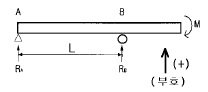
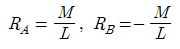
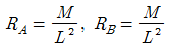
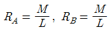
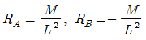
(정답률: 20%)
11. 주철제 환봉이 축방향 압축응력 40 MPa과 모든 반경방향으로 압축응력 10 MPa를 받는다. 탄성계수 E= 100 GPa, 포아송비 ν=0.25, 환봉의 직경 d=120 ㎜, 길이 L=200 ㎜ 일 때 실린더 체적의 변화량 △V는 몇 ㎣ 인가?
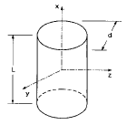
- -679
- -428
- -254
- -121
(정답률: 28%)
12. 그림과 같이 외팔보에 하중 P가 B점과 C점에 작용할 때 자유단 B에서의 처짐량은?
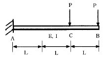
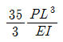
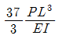
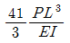
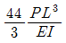
(정답률: 34%)
13. 그림과 같은 보의 최대처짐을 나타내는 식은? (단, Ⅰ는 단면 2차 모멘트이고 보의 자중은 무시한다.)
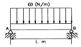
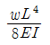
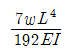
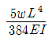
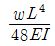
(정답률: 57%)
14. 주변형률 ε1=983x10-6, ε2=-183x10-6, 최대 전단변형률
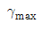
=1166x10-6 의 평면 변형률 상태에서 최대 전단응력 τmax 는 몇 MPa 인가? (단, 탄성계수 E=200GPa, 포아송비 ν=0.3 이다.)- 204
- 114.3
- 89.7
- 24.6
(정답률: 35%)
15. 직사각형 단면(폭 12 cm, 높이 5 cm)이고, 길이 1 m 인 외팔보가 있다. 이 보의 허용응력이 500 MPa이라면 높이와 폭의 치수를 서로 바꾸면 받을수 있는 하중의 크기는 어떻게 변화하는가?
- 1.2배 증가
- 2.4배 증가
- 1.2배 감소
- 변화없다
(정답률: 38%)
16. 다음 단면의 도심
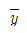
을 구하면?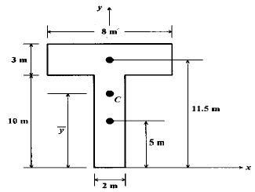
- 6.55m
- 7.25m
- 8.55m
- 9.25m
(정답률: 53%)
17. 전단 탄성계수가 80 GPa인 재료에 직교하는 2축 응력σx=200 MPa, σy=-200 MPa 이 작용할 때, 그림과 같은 미소요소 a,b,c,d의 전단변형률
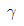
의 크기는? (단, 경사각 φ 는 45° 이다.)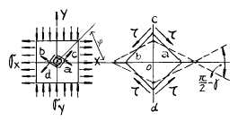
- 3.125 x 10-3
- 2.5 x 10-3
- 1.875 x 10-3
- 1.25 x 10-3
(정답률: 27%)
18. 그림의 구조물이 하중 P를 받을때 구조물속에 저장되는 탄성 에너지는? (단, 단면적 A, 탄성계수 E는 모두 같다.)
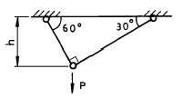
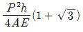
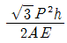
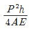
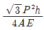
(정답률: 41%)
19. 그림과 같은 단순보가 좌측에서 우력 Mo가 작용하고있다. 이 경우 A점과 B점에서 모멘트는 ?
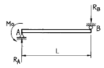
- MA = -Mo, MB = 0
- MA = 0, MB = -Mo
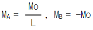
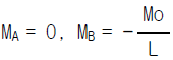
(정답률: 33%)
20. 보속의 굽힘응력의 크기에 대한 설명 중 옳은 것은?
- 중립면에서의 거리에 정비례한다.
- 중립면에서 최대로 된다.
- 위 가장자리에서의 거리에 정비례한다.
- 아래 가장자리에서의 거리에 정비례한다.
(정답률: 14%)
2과목: 기계열역학
21. 계 내에 임의의 이상기체 1kg이 채워져 있다. 이상 기체의 정압비열은 1.0 kJ/kg · K이고, 기체 상수는 0.3kJ/kg · K이다. 압력 100kPa, 온도 50℃의 초기 상태에서 체적이 두 배로 증가할 때까지 기체를 정압과정으로 팽창시킬 경우, 필요한 열량은 약 몇 kJ인가? (단, 비열비 =1.43 이다.)
- 226.1 kJ
- 323 kJ
- 96.9 kJ
- 419.9 kJ
(정답률: 19%)
22. 다음 중 이상적인 오토사이클의 효율을 증가시키는 방안으로 모두 맞는 것은?
- 최고온도 증가, 압축비 증가, 비열비 증가
- 최고온도 증가, 압축비 감소, 비열비 증가
- 최고온도 증가, 압축비 증가, 비열비 감소
- 최고온도 감소, 압축비 증가, 비열비 감소
(정답률: 37%)
23. 다음 설명 중 맞는 것은?
- 열과 일은 열역학 제 1법칙에만 사용된다.
- 순수물질이란 균질하고 깨끗한 물질로 정의한다.
- 대기압하의 공기는 순수물질이다.
- 압축성계수는 실제 기체의 몰비체적에 대한 이상 기체의 몰비체적의 비율로 정의한다.
(정답률: 24%)
24. 압력 P1, P2사이에서(P1＞ P2) 작동하는 이상 공기 냉동기의 성능계수는 얼마 정도인가? (단, P2/P1 = 0.5, k = 1.4이다.)
- 2.32
- 3.32
- 4.57
- 5.57
(정답률: 27%)
25. 재열 및 재생 사이클에 대한 설명 중 맞는 것은?
- 재생 사이클은 터빈 출구 건도를 증가시킨다.
- 재열 사이클은 터빈 출구의 건도를 감소시킨다.
- 추기재생 사이클의 단수가 너무 많으면 효율의 증가에 따른 에너지 절약의 효과보다 추가적인 장비의 가격이 높아져서 경제성이 떨어진다.
- 개방형 급수가열기를 이용한 재생사이클에서는 급수 가열기와 동일한 숫자의 급수펌프가 필요하다.
(정답률: 48%)
26. 가역 단열 과정에서 엔트로피는 어떻게 되는가?
- 증가한다.
- 변하지 않는다.
- 감소한다.
- 경우에 따라 증가 또는 감소한다.
(정답률: 41%)
27. 다음 사항중 틀린 것은?
- 랭킨 사이클의 열효율은 터빈 입구의 과열증기 상태와 복수기의 진공도에 의해서 거의 결정된다.
- 랭킨 사이클의 열효율을 열역학적으로 개선한 것이 재생 랭킨 사이클이다.
- 증기 터빈에서 복수기의 배압은 냉각수의 온도에 의해서 정해지므로 자유로이 바꿀수는 없다.
- 랭킨 사이클의 열효율은 터빈의 입구 압력, 입구온도의 영향만을 받는다.
(정답률: 40%)
28. 압력용기 속에 온도 95℃, 건도 29.2％인 습공기가 들어있다. 압력이 500kPa일때 비체적(V)과 내부에너지(U)은약 얼마인가? (단, V, U의 단위는 m3/kg, kJ/kg이고, 95℃에서 포화액체 V'= 0.00104, 건포화증기 V" = 1.98, 포화액체 U'= 398, 건포화증기 U" = 2501 이다.)
- 0.257 m3/kg, 1879 KJ/kg
- 0.357 m3/kg, 2225 KJ/kg
- 0.579 m3/kg, 1011 KJ/kg
- 0.678 m3/kg, 3756 KJ/kg
(정답률: 29%)
29. 열역학 제 2법칙에 대한 설명 중 맞는 것은?
- 과정(process)의 방향성을 제시한다.
- 에너지의 량을 결정한다.
- 에너지의 종류를 판단할 수 있다.
- 공학적 장치의 크기를 알 수 있다.
(정답률: 39%)
30. 250 K에서 열을 흡수하여 320 K에서 방출하는 이상적인 냉동기의 성능 계수는?
- 0.28
- 1.28
- 3.57
- 4.57
(정답률: 42%)
31. 그림과 같은 오토사이클의 열효율은? (단, T1=300K, T2=689K, T3=2364K, T4=1029K 이다.)
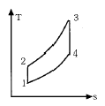
- 37.5 %
- 56.5 %
- 43.5 %
- 62.5 %
(정답률: 39%)
32. 다음 사항 중 틀린 것은?
- 단열된 정상유로에서 압축성 유체의 운동에너지의 상승량은 도중의 비체적의 변화과정에 관계없이 엔탈피의 강하량과 같다.
- 교축(throttling)과정에서는 엔트로피가 일정하다.
- 흐름이 음속이상이 될 때는 임계상태 이후의 축소 노즐의 유량은 배압의 영향을 받지 않게된다.
- 단열된 노즐을 유체가 유동할 때 노즐내에서는 마찰손실이 생긴다.
(정답률: 20%)
33. 노즐(nozzle)에서 단열팽창하였을 때, 비가역 과정에서 보다 가역과정의 경우 출구속도는 어떻게 변화하는가?
- 빠르다.
- 늦다.
- 같다.
- 구별할 수 없다.
(정답률: 32%)
34. 대기압이 95 kPa 인 장소에 있는 용기의 게이지 압력이 500 cmH2O를 나타내고 있다. 용기의 절대압력은?
- 101 kPa
- 49101 kPa
- 144 kPa
- 99 kPa
(정답률: 16%)
35. 복수기(응축기)에서 10 kPa, 건도x = 0.96 인 수증기를 매시간 1000 kg 응축시키는 데 필요한 냉각수의 유량은? (단, 냉각수는 15℃에서 들어오고 25℃에서 나간다. 그리고 10kPa의 포화액과 포화증기의 엔탈피는 각각 hf = 191.83 kJ/㎏, hg = 2584.7 kJ/㎏ 이며, 물의 비열은 4.2 kJ/㎏.K 이다.)
- 약 27400 kg/h
- 약 34800 kg/h
- 약 54700 kg/h
- 약 75500 kg/h
(정답률: 8%)
36. 단열 밀폐된 실내에서 [A]의 경우는 냉장고 문을 닫고, [B]의 경우는 냉장고 문을 연채 냉장고를 작동시켰을 때 실내온도의 변화는?
- [A]는 실내온도 상승, [B]는 실내온도 변화 없음
- [A]는 실내온도 변화 없음, [B]는 실내온도 하강
- [A],[B] 모두 실내온도가 상승
- [A]는 실내온도 상승, [B]는 실내온도 하강
(정답률: 35%)
37. 비가역 단열변화에 있어서 엔트로피 변화량은 어떻게 되는가?
- 증가한다.
- 감소한다.
- 변화량은 없다.
- 증가할 수도 감소할 수도 있다.
(정답률: 15%)
38. 압력이 100 kPa이며 온도가 25℃인 방의 크기가 240 m3이다. 이 방안에 들어있는 공기의 질량은 약 얼마인가? (단, 공기는 이상기체로 가정하며, 공기의 기체상수는 0.287 kJ/kg.K이다.)
- 3.57 kg
- 0.280 kg
- 0.00357 kg
- 280 kg
(정답률: 60%)
39. 순수한 물질로 된 밀폐계가 가역단열 과정 동안 수행한 일의 양은? (단, 절대량 기준으로 한다.)
- 엔탈피의 변화량과 같다.
- 내부에너지의 변화량과 같다.
- 정압과정에서 이루어진 일의 양과 같다.
- 가역 단열과정에서 일의 수행은 있을 수 없다.
(정답률: 30%)
40. 마찰이 없는 피스톤이 끼워진 실린더가 있다. 이 실린더내 공기의 초기 압력은 300 kPa 이며 초기 체적은 0.02m3 이다. 실린더 아래에 분젠 버너를 설치하여 가열하였더니 공기의 체적이 0.1 m3 로 증가되었다. 이 과정에서 공기가 행한 일은 얼마인가?
- 6.0 kJ
- 24.0 kJ
- 30.0 kJ
- 36.0 kJ
(정답률: 44%)
3과목: 기계유체역학
41. 표준대기압, 20℃의 대기 중에서의 음속은 약 몇 m/s 인가? (단, 비열비 k=1.4이고, 공기의 기체상수는 287 N∙m/㎏∙K이다.)
- 340
- 343
- 430
- 338
(정답률: 34%)
42. 그림과 같이 매우 넓은 저수지 사이를 내경 300 mm의 원관으로 연결했을 때, 이러한 계(system)의 동력손실은얼마인가?
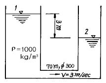
- 636000 W
- 25364 W
- 6233 W
- 0 W
(정답률: 21%)
43. 물의 높이 8 cm와 비중 2.94인 액주계 유체의 높이 6 cm를 합한 압력은 수은주(비중 13.6) 높이로는 몇 cm에 상당하는가?
- 약 1.03
- 약 1.88
- 약 2.04
- 약 3.06
(정답률: 46%)
44. 경계층을 옳게 설명한 것은?
- 정지 유체 중에서 물체와 유체 경계에 유체 분자의 운동에 의해 경계층이 생긴다.
- 완전 유체인 경우에 특히 발생하는 현상이다.
- 물체 형상(形狀)을 소위 유선형으로 하면 경계층은 없어 진다.
- 물체가 받는 저항은 경계층에 관계 있다.
(정답률: 34%)
45. 반경 2 m인 실린더에 담겨진 물이 실린더의 중심축에 대하여 일정한 속도 60rpm으로 회전하고 있다. 실린더에서 물이 넘쳐 흐르지 않을 경우 물의 중심점과 실린더 벽면 사이의 수면의 수직 최고거리는 몇 m 인가?
- 8.04
- 4.02
- 2.42
- 1.84
(정답률: 34%)
46. 30 m의 폭을 가진 방수로에 20 cm의 수심과 5 m/s의 유속으로 물이 흐르고 있다. 이 흐름의 Froude수는 얼마인가?
- 0.57
- 1.57
- 2.57
- 3.57
(정답률: 34%)
47. 그림과 같은 순간에 마찰에 의한 손실을 무시하면 노즐에서 유출하는 유량은? (단, 기름의 비중은 0.75이다.)
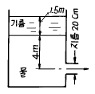
- 0.60 m3/s
- 0.58 m3/s
- 0.33 m3/s
- 0.31 m3/s
(정답률: 32%)
48. 어떤 물체의 공기 중에서 잰 무게는 590 N이고 이것을 수중(水中)에서 잰 무게는 108 N이였다. 이 물체의 체적과 비중은? (단, 여기서 공기의 무게는 무시한다.)
- 0.02 m3, 1.8
- 0.049 m3, 1.2
- 0.49 m3, 1.0
- 49 m3, 1.8
(정답률: 30%)
49. 비점성, 비압축성 유체가 그림과 같이 쐐기모양의 벽면 사이를 작은 구멍을 향해 흐른다. 이 유동을 근사적으로 표현하는 속도포텐셜이 ø =-2ln r일 때, 작은구멍으로 흐르는 단위 깊이당 체적유량은 얼마인가?
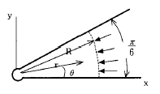
- -π m2/s
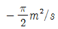
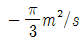
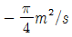
(정답률: 19%)
50. 단면이 정사각형인 직선관로내의 층류유동에서 관 양단에 일정한 압력차가 주어져 있는 경우 유량 Q와 정사각형 한변의 길이 L과의 관계는 ?
- Q는 L에 비례
- Q는 L2 에 비례
- Q는 L3 에 비례
- Q는 L4 에 비례
(정답률: 15%)
51. 평행 흐름 V 속에 놓인 물체 둘레의 순환이 Γ 일때, 이 물체에 발생하는 양력 L은(Kutta-Joukowski의 정리)? (단, 유체의 밀도는 ρ 라 한다.)
- L = Γ /ρ V
- L = ρ Γ /V
- L = ρ VΓ
- L = VΓ /ρ
(정답률: 43%)
52. 일반적인 베르누이 방정식을 적용할 때 성립하여야 하는 조건이 아닌 것은?
- 압축성유동
- 유선을 따라서
- 정상상태
- 비점성 유동
(정답률: 43%)
53. 설계규정에 의하면 원형 관의 유체속도는 2 m/s내외이다. 1.0m3/min의 물을 수송하는데 적당한 관의 직경은 몇 mm인가?
- 10
- 25
- 103
- 500
(정답률: 42%)
54. 탱크(내부온도 20℃, 체적 0.1m3, 압력 800 kPa abs)에 공기가 채워져 있다가 t=0 일 때 밸브를 통해 공기를 바깥으로 방출한다. 밸브를 지나는 공기는 300 m/s의 유속을 갖고 밀도는 6.1 kg/m3이며 단면적은 60 mm2이다. 탱크 내의 물성치들은 균일한 분포를 갖는다고 가정한다. t=0일 때 탱크내 밀도의 시간에 따른 변화율은 몇 kg/m3s 인가?
- -6.0
- -3.⑤
- -30.5
- -1.1
(정답률: 25%)
55. 공기를 이상기체라 가정할 때 2기압 20℃에서의 공기의 밀도는 몇 kg/m3 인가? (단, 1기압=105 Pa, 공기의 기체상수 R=287N∙m/kg.K이다.)
- 1.2
- 2.38
- 1.0
- 999
(정답률: 47%)
56. 그림과 같이 단면적이 A인 관으로 밀도가 ρ인 비압축성 유체가 V의 유속으로 들어와 지름이 절반인 노즐로 분출되고 있다. 제트에 의해서 평판에 작용하는 힘은?
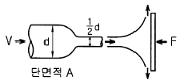
- ρV2A
- 2ρV2A
- 4ρV2A
- . 16ρV2A
(정답률: 22%)
57. 직경 2 mm의 유리관이 접촉각 10° 인 유체가 담긴 그릇 속에 세워져 있다. 유리와 액체사이의 표면장력이 0.06N/m, 유체밀도가 800 kg/m3일 때 액면으로부터의 모세관 액체 의 높이는 몇 mm 인가?
- 1.5
- 15
- 3
- 30
(정답률: 15%)
58. 직경이 50 cm인 원관에 물이 2 m/s속도로 흐른다. 역학적 상사를 위하여 관성력과 점성력만을 고려하여 1/5로 축소된 모형에서 같은 물로 실험할 경우 모형에서의 유량은 몇 L/s 인가? (단, 물의 동점성계수는 1x10-6 m2/s 이다.)
- 7
- 79
- 119
- 790
(정답률: 35%)
59. 길이가 5 m, 폭이 2 m인 평판이 수면과 수직을 이루고 있다. 평판의 윗면이 수면과 일치하면서 잠겨 있을 때, 수면의 대기압을 무시하면 평판의 한 쪽면에 작용하는 힘은 몇 kN 인가? (단, 물의 밀도는 1000 kg/m3이다.)
- 490
- 25
- 245
- 50
(정답률: 27%)
60. 동점성계수가 13.68x10-6 m2/s인 공기가 매끈한 평판위를 1.4 m/s의 속도로 흐르고 있을 때 선단(先端)으로 부터 20 ㎝ 되는 곳에서의 레이놀즈수는?
- 20468
- 292398
- 137931
- 2046783
(정답률: 43%)
4과목: 기계재료 및 유압기기
61. 유압 프레스의 작동원리는 다음 중 어느 이론에 바탕을 둔 것인가?
- 파스칼의 원리
- 보일의 법칙
- 토리체리의 원리
- 아르키메데스의 원리
(정답률: 82%)
62. 건설기계에서 사용되고 있는 보기와 같은 유압모터 회로의 명칭으로 가장 적합한 것은?
- 탠덤형 배치회로
- 직렬 배치 회로
- 병렬 배치 회로
- 정출력 구동 회로
(정답률: 40%)
63. 다음 중 체적탄성계수의 설명이 잘못된 것은?
- 압력에 따라 증가한다.
- 압력의 단위와 같다.
- 체적탄성계수의 역수를 압축률이라 한다.
- 비압축성 유체일수록 체적탄성계수는 작다.
(정답률: 66%)
64. 제강용 롤, 분쇄기 롤, 제지용 롤 등에 이용되는 가장 적당한 주철은?
- 칠드주철
- 구상흑연주철
- 회주철
- 펄라이트주철
(정답률: 53%)
65. 축동력 7.4kW로 돌리는 베인펌프 송출압력이 70kgf/cm2, 송출유량은 53 ℓ /min일 때 이 펌프의 전효율(全效率)은 얼마인가?
- 79.1 %
- 81.9 %
- 89.1 %
- 91.8 %
(정답률: 48%)
66. 다음 중 유체 토크 컨버터의 구성 요소가 아닌 것은?
- 스테이터
- 펌프
- 터어빈
- 릴리프밸브
(정답률: 44%)
67. 토출압력이 70kgf/cm2, 토출량은 50ℓ /min인 유압 펌프용 모터의 1분간 회전수는 얼마인가? (단, 펌프 1회전당 유량은 Qn = 20 cc/rev이며, 효율은 100% 로 가정한다.)
- 1250
- 1750
- 2250
- 2500
(정답률: 30%)
68. 다음 유압유 중 점도지수가 낮고 비중(15℃)이 가장 커저온에서 펌프 시동시 캐비테이션이 발생되기 쉬운 유압유는?
- 인산 에스테르계 합성 유압유
- 수중 유형 유화 유압유
- 석유계 유압유
- 유중수형 유화 유압유
(정답률: 47%)
69. 쾌삭강(Free cutting steel)에 절삭속도를 크게 하기 위하여 특히 의식적으로 첨가하는 합금 원소는?
- Ni
- Mn
- W
- S
(정답률: 48%)
70. 금속 원자의 결정면은 밀러지수(Miller index)의 기호를 사용하여 표시할 수 있다. 다음 그림에서 입방 격자면의 밀러지수는?
- (100)
- (010)
- (110)
- (111)
(정답률: 65%)
71. 고속도강에 관한 설명으로 틀린 것은?
- 고속도의 절삭가공이 가능하게 하기 위해서 주로 크롬, 텅스텐, 바나듐 등을 첨가 한다.
- 고속도강의 표준형으로 18 - 4 - 1형은 바나듐 18%, 크롬 4%, 텅스텐 1%의 조성의 것이 사용된다.
- 텅스텐을 첨가하면 복합탄화물이 생기고 내마모성이 향상 된다.
- 바나듐은 강력한 탄화물 형성용 원소이며 절삭능력을 증가시킨다.
(정답률: 67%)
72. α - Fe 와 Fe3C 의 층상조직은?
- 오스테나이트
- 펄라이트
- 시멘타이트
- 레데뷰라이트
(정답률: 34%)
73. 탄소강에서 탄소량이 증가하면 일반적으로 용융온도는?
- 높아진다.
- 낮아진다.
- 같다.
- 불변이다.
(정답률: 36%)
74. 미터-인 속도제어 회로로 실린더의 속도를 조정하는 경우 실린더에 인력(tractive force)이 작용하면 실린더 속도는 제어할 수 없게 된다. 이 때 이를 제어할수 있는 밸브는?
- 브레이크 밸브
- 카운터 밸런스 밸브
- 3방향 감압밸브
- 분류밸브
(정답률: 59%)
75. 금속이 열이나 전기전도도가 높은 이유는 무엇인가?
- 금속은 결정체이기 때문이다.
- 비중이 크기 때문이다.
- 금속으로서 연성이 크기 때문이다.
- 자유전자 때문이다.
(정답률: 64%)
76. 열처리에 의한 철강재료의 강화와 밀접한 관계가 있는 것은?
- 페라이트 결정립도
- 펄라이트 결정립도
- 오스테나이트 결정립도
- 시멘타이트 결정립도
(정답률: 39%)
77. 포금(gun metal)은 대포의 포신으로 내식성이 좋은 금속이다. 이것의 주성분은 무엇인가?
- Cu,Sn,Zn
- Cu,Zn,Ni
- Cu,Al,Sn
- Cu,Ni,Sn
(정답률: 35%)
78. 다음 중 유량조절밸브에 의한 속도 제어회로를 나타낸 것이 아닌 것은?
- 미터 인 회로
- 블리이드 오프 회로
- 미터 아웃 회로
- 최대압력 제한회로
(정답률: 69%)
79. 다음 그림은 유압 도면 기호에서 무슨 밸브를 나타낸 것인가?
- 릴리프 밸브
- 무부하 밸브
- 시퀀스 밸브
- 감압 밸브
(정답률: 44%)
80. 다음 금속 중에서 용융점이 가장 높은 것은?
- V
- W
- Co
- Mo
(정답률: 62%)
5과목: 기계제작법 및 기계동력학
81. 테르밋 용접(thermit welding) 이란?
- 원자수소의 발열이용
- 전기용접과 가스용접법을 결합한 방식
- 산화철과 알미늄의 반응열을 이용한 용접
- 액체산소를 이용한 가스용접법의 일종
(정답률: 52%)
82. 공구의 수명 시험을 가장 적절히 설명한 것은?
- 공구 옆면의 일정한 마멸폭 까지의 공구수명을 실측한다.
- 일정한 절삭 체적에서 공구수명을 실측한다.
- Taylor의 공구수명식의 지수 n과 상수 C의 값을 구하는 것이다.
- 일정한 절삭 깊이와 절삭 속도에서 공구의 수명을 시간으로 실측하는 것이다.
(정답률: 39%)
83. 그림에 보인 시스템은 초기에 정지상태에 있다. 풀리의 무게와 축의 마찰을 무시하고 블록의 질량을 125 kg이라 할 때, 블록의 무게와 350 N의 힘이 작용함에 따른 블록의 가속도 크기는 몇 m/s2 인가?
- 2.8
- 7.0
- 9.8
- 12.7
(정답률: 34%)
84. 공작물의 두개 이상의 면에 구멍을 뚫을 때 또는 기준면을 잡을 때, 지그의 구조는 다음 어느 것이 적합한가?
- 평지그
- 회전지그
- 검사용 지그
- 상자형 지그
(정답률: 44%)
85. 고정축에 대한 등속회전운동에서 반지름이 3 배 증가하였다. 선속도는 어떻게 되는가?
- 변화없음
- 1/3로 감소
- 3배 증가
- 9배 증가
(정답률: 29%)
86. 질량이 10 kg인 물체를 스프링 끝에 매달았더니 20 cm처졌다. 이 계의 고유진동수(Hz)는?
- 7/π
- 3.5/π
- 2/π
- 3/π
(정답률: 34%)
87. 같은 차종인 자동차 B, C가 브레이크가 풀린 채 정지하고 있다. 이 때 같은 모델의 자동차 A가 1.5 m/s의 속력으로 B와 충돌하면, 이후 B와 C가 다시 충돌하게 되어 결국 대의 자동차가 연쇄 충돌하게 된다. 이때, B와 C가 충돌한 직후의 C차의 속도는 몇 m/s 인가? (단, 범퍼사이 반발계수는 e=0.75 이다.)
- 0.160
- 0.187
- 1.148
- 1.312
(정답률: 34%)
88. 원뿔을 전개한 다음 그림에서 원뿔 밑면의 지름을 d라고 하면 전개도의 각도 읨는 다음 어느 식으로 표시하는가?
(정답률: 16%)
89. 금속재료의 표면에 강철이나 주철의 작은 강구를 고속으로 분사시켜 표면층의 경도를 높이는 방법은?
- 금속침투법
- 칠드경화법
- 숏피닝(shot peening)
- 하드페이싱(hard facing)
(정답률: 63%)
90. 광파 간섭현상을 이용하여 평면도를 측정하는 것은?
- 옵티컬 플랫 (optical flat)
- 공구 현미경
- 오토 콜리메이터 (autocollimater)
- NF식 표면 거칠기 측정기
(정답률: 59%)
91. 소성가공에 속하지 않는 것은?
- 압연가공
- 인발가공
- 단조가공
- 선반가공
(정답률: 70%)
92. 주형의 통기도를 높이기 위한 다음 조치들 중에서 잘못된 것은?
- 주형을 건조한다.
- 주물사의 입도가 작고 모가 난것이 좋다.
- 가급적 다짐 정도(精度)를 작게 한다.
- 점토의 량을 줄여본다.
(정답률: 50%)
93. 감쇠가 없는 경우에 전달률의 값은? (단, 이다.)
(정답률: 34%)
94. 북쪽으로 60km/h의 속도로 가는 차 A가 동쪽으로 80km/h의 속도로 가는 차 B를 보았을 때 A에 대한 B의 상대속도는 그 크기가 몇 km/h 인가?
- 60
- 80
- 100
- 120
(정답률: 43%)
95. 두께가 균일한 원판의 무게가 10 N, 반지름이 0.5 m이고 회전축의 위치를 중심축으로 할 때 회전반경 k는 몇 m인가?
- 3.33
- 5.00
- 0.50
- 0.35
(정답률: 8%)
96. 그림과 같은 질량이 m이고 길이가 L인 균질의 가는 보가두 개의 스프링으로 지지되어 있을때 이 시스템의 고유진동수 ωn 은? (단, 공기저항은 무시한다.)
(정답률: 12%)
97. 연삭작업에서 진동으로 떠는 것을 연삭떨림 (grinding chatter)이라 한다. 연삭떨림과 관계가 없는 것은?
- 연삭숫돌의 불균형
- 숫돌이 진원이 아닐 때
- 연삭중 과열이 생겼을 때
- 재질의 불균일
(정답률: 38%)
98. 초경합금 공구의 절삭날의 수명을 연장시키는 방법의 하나로 가장 좋은 것은?
- 전해 연삭
- 전기화학 가공
- 화학 연삭
- 플라스마 가공
(정답률: 50%)
99. 중량이 42 N, 스프링상수가 28 N/cm, 감쇠계수(c)가 0.3N∙s/cm 일 때 이 계의 감쇠비(ζ)는 얼마인가?
- 0.323
- 0.215
- 0.137
- 0.174
(정답률: 48%)
100. 감쇠비가 0.1인 자유감쇠 진동계에서 감쇠 고유진동수는 비감쇠 고유진동수의 몇 배인가?
- 0.945
- 0.965
- 0.995
- 1.25
(정답률: 22%)
탄성에너지 밀도 = (인장하중)^2 / (2 x 탄성계수 x 단면적)
여기서 인장하중은 40 kN = 40,000 N이고, 탄성계수는 72 GPa = 72,000 MPa = 72,000,000 N/m^2이다. 단면적은 지름이 40 mm인 원의 단면적을 사용하면 된다.
단면적 = π x (지름/2)^2 = π x (40/2)^2 = 1256.64 mm^2 = 0.00125664 m^2
따라서,
탄성에너지 밀도 = (40,000)^2 / (2 x 72,000,000 x 0.00125664) = 7036 N∙m/m^3
따라서, 정답은 "7036"이다.